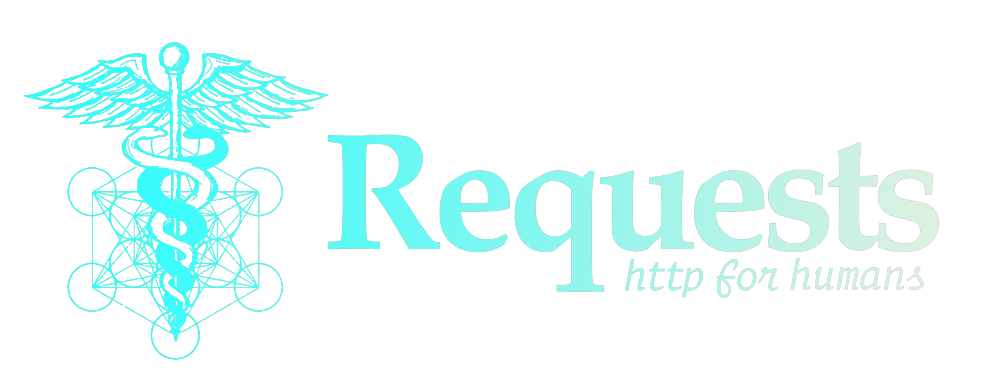

blow up your knowledge in request library

What is Request library ?

In this article on Python Requests Guide, I will explain to you all the basics of Requests Module and how you can send HTTP/1.1 requests using Python. in the end you will be able to use web scraping using Python Requests is a Python module that you can use to send all kinds of HTTP requests. It is an easy-to-use library with a lot of features so for you to play with web, Python Requests is must. Whether it be hitting APIs, downloading entire facebook pages, and much more cool stuff, one will have to make a request to the URL.
Why you should know about Request ?
It is the most powerful tool of Python that allows us to send requests on the web. It includes many features and methods to send HTTP requests. The system that sends requests is known as the client, and the system that holds the webserver is known as a serve
Installing Requests
Let’s begin by installing the requests library. To do so, run the following command:
pip install requests
We can also use the Pipenv (Python packaging tool) to install the request module. Type the following command.
pipenv install requests
How to Make a GET Request?

One of the most common HTTP methods is GET
GET method is used to retrieve information from the given server using a given URI.
The GET method sends the encoded user information appended to the page request.
In other words, it is used to send a request to a URL. To invoke the GET request, we use the following syntax.
import requests
# Create a GET request
git_requests = requests.get('https://api.github.com/users/doflamingo')
# check the status for the output received
print(git_requests)
# print content of request
print(git_requests.content)
and voila you made your first request
For more, visit GET method – Python requests
Let’s dive a little deeper into the response of that request.
- Response

A Response is a powerful object for examine the results of the request with lots of functions and attributes that assist in normalizing data or creating ideal portions of code.
Response object can be used to imply lots of features, methods, and functionalities.
import requests
# Create a get request
response = requests.get('https://api.github.com/')
# show request object
print(response.url)
# show status code
# We will delve into it in the next section
print(response.status_code)
For more response method visit Developer Interface
- Status Codes

Status code is a response that we get after making the GET or POST request. A status code informs us of the status of the request.
For example, a 200 OK status means that your request was successful, whereas a 404 NOT FOUND status means that the resource you were looking for was not found.
There are a lot of them, get to know them
# Integer Code of responded HTTP Status, e.g. 404 or 200.
response.status_code
We can also use this information to make the decision in our code.
if response.status_code == 200:
print('Success!')
elif response.status_code == 404:
print('Not Found.')
- Request Headers
HTTP headers let the client and the server pass additional information with an HTTP request or response.
All the headers are case-insensitive.
To customize headers, simply pass them in a dict to the headers parameter. Similarly, you can also send
your own cookies to a server using a dict passed to the cookies parameter.
#imposrting requests librarie
import requests
#make a url
url = 'http://some-domain.com/set/cookies/headers'
#pass them to the dictionnary
headers = {'user-agent': 'your-own-user-agent/0.0.1'}
#get the request
request = requests.get(url, headers=headers)
- Authentication using Python Requests

Authentication refers to giving a user permissions to access a particular resource. like helps a service understand who you are.
All the request functions you’ve seen to this point provide a parameter called auth, which allows you to pass your credentials,
so To achieve this authentication, typically one provides authentication data through Authorization header or a custom header defined by server.
# import requests module
import requests
# import HTTPBasicAuth from requests.auth (request authentication)
from requests.auth import HTTPBasicAuth
# craete a get request
# Replace “user” and “pass” with your username and password.
response = requests.get('https://api.github.com / user, ',
auth = HTTPBasicAuth('user', 'pass'))
# show request object
print(response)
It will authenticate the request and return a response 200
or error 403.
Another example :
#import getpass
from getpass import getpass
#make a request
requests.get('https://api.github.com/user', auth=('username', getpass()))
#the response :
>>> Response : [200]
The request succeeded if the credentials you passed in the tuple to auth are valid.
if you try it without a credentials, you’ll will get that the status code
#make a request
>>> requests.get('https://api.github.com/user')
#the response :
>>> Response : [401]
- Session

The Session object allows you to persist certain parameters across requests.
like Sometimes it is useful to preserve certain parameters across multiple requests. The Session object does exactly that.
The Session object uses urllib3’s connection pooling. This means that the underlying TCP connection will be reused for all
the requests made to the same host.
#make a session
session = requests.Session()
#make a get request
session.get('https://httpbin.org/cookies/set/sessioncookie/151471515')
request = session.get('https://httpbin.org/cookies')
#check the set
print(request.text)
>>> {"cookies": {"sessioncookie": "151471515"}}
+ Sources
+ Conclusion
Now you can make basic requests to a server by passing specific headers, cookies, or query strings. This will be very handy when you are trying to scrape some webpages for information after that I am pretty sure you want to know more about Python so here's our other libraries articles in web-app/scrapping ...
- flask
- django